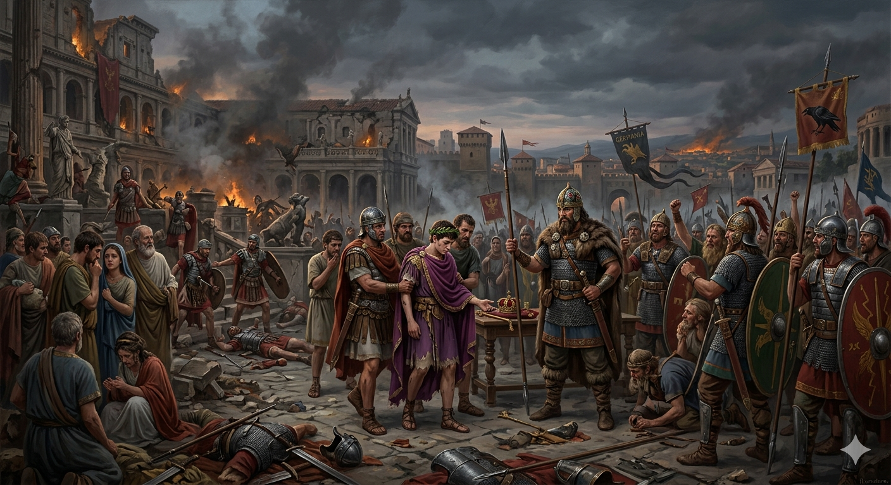
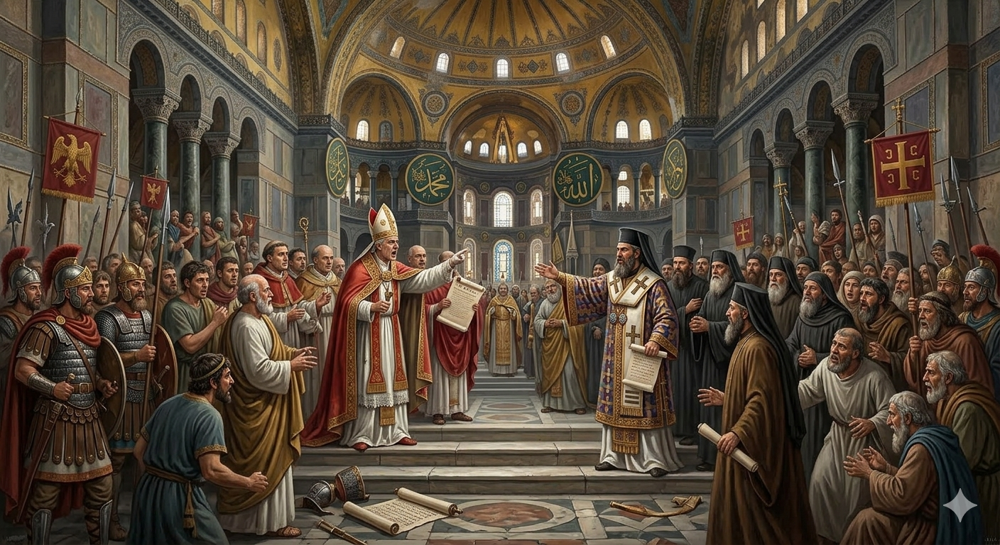
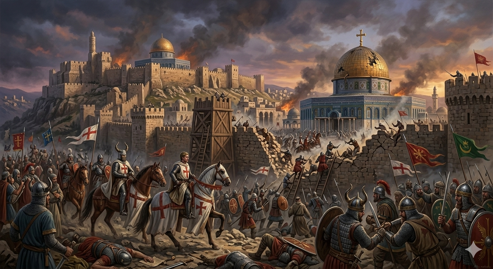
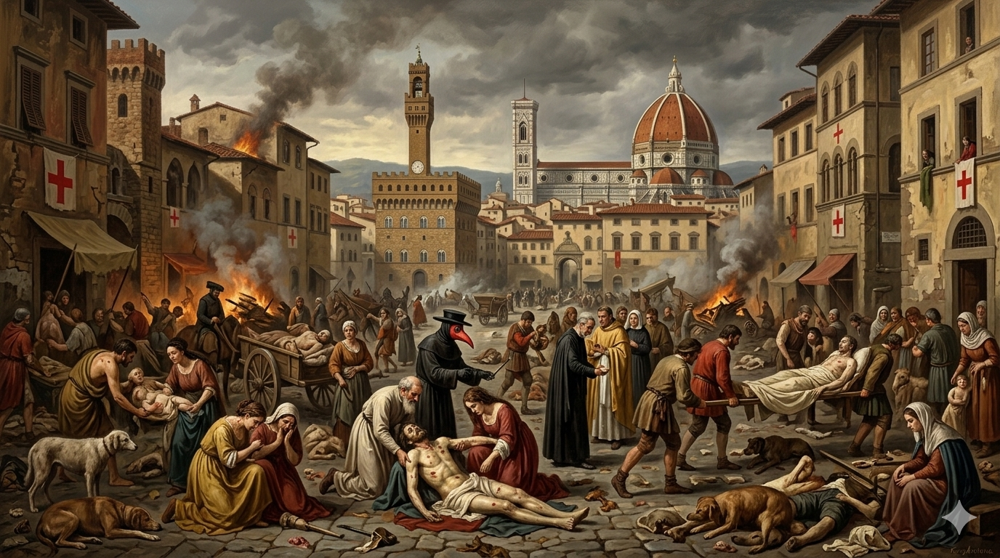
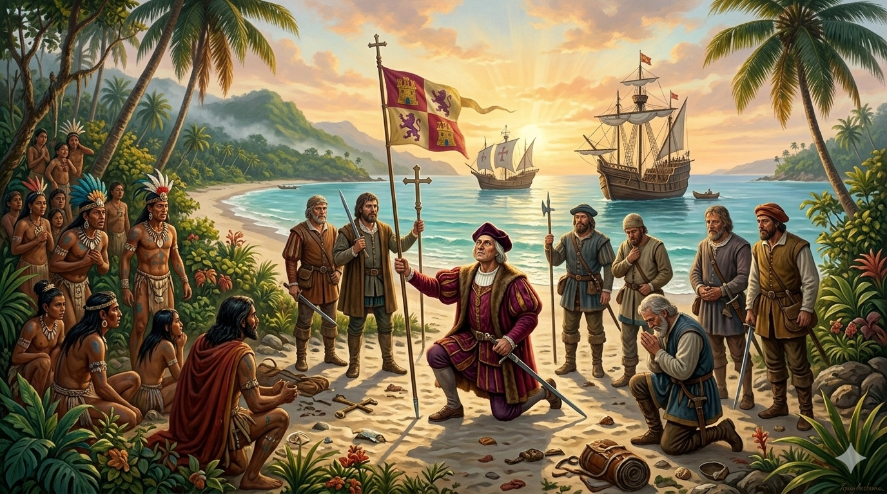

476 - Nyugatrómai birodalom bukása
476-ban Odoaker germán vezér megfosztotta trónjától Romulus Augustulus utolsó nyugatrómai császárt, és Itália királyává kiáltotta ki magát, megszüntetve a császárságot. Ez a népvándorlás okozta hanyatlás, a gazdasági válság és a külső támadások csúcspontja volt, ami egyben az ókor végét és a középkor kezdetét jelenti.

1054 július 16 - Egyházszakadás
A nagy egyházszakadás (skizma) az egységes keresztény egyház végleges kettészakadása volt 1054-ben Róma (nyugati/katolikus) és Bizánc (keleti/ortodox) központtal. A szakadást a pápai primátus (főség) el nem ismerése, liturgiai különbségek (kovásztalan kenyér), valamint politikai ellentétek okozták, melyeket a kölcsönös kiátkozások véglegesítettek.

1099 július 15 - Jeruzsálem elfoglalása
Jeruzsálem történelme során számos alkalommal cserélt gazdát ostromok révén. A legjelentősebbek: i. e. 587-ben a babiloniak (Nabukodonozor) lerombolták az első templomot, i. sz. 70-ben Titus római hadvezér leverte a zsidó lázadást és elpusztította a második templomot. 1099-ben az első keresztes hadjárat, 1187-ben Szaladin foglalta el.

1347-1353 - Nagy pestisjárvány
A 14. századi nagy pestisjárvány (Fekete halál, 1347–1352) a történelem legpusztítóbb járványa volt, amely a Yersinia pestis baktérium okozta fertőzéssel Európa lakosságának mintegy 30-50%-át (kb. 20-25 millió embert) elpusztította. A patkánybolhák által terjesztett betegség Ázsiából érkezett, és a rossz higiéniás viszonyok miatt gyorsan söpört végig a kontinensen, mély gazdasági és társadalmi válságot okozva.

1492 október 12 - Amerika felfedezése
Kolumbusz Kristóf 1492. október 12-én fedezte fel Amerikát spanyol szolgálatban, amikor a Bahamákon (San Salvador) partra szállt, miközben nyugati irányból keresett tengeri utat Indiába. Az őslakosokat indiánoknak nevezte, és bár élete végéig Ázsiának hitte az új kontinenst, útja megnyitotta az utat az európai gyarmatosítás és a felfedezések kora előtt.